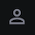

#
Changelog
This page summarizes updates, changes, and improvements we make to the app for each release.
You can check your app's version number at the bottom of the Accounts and Settings  page.
#
Open Beta
#
v0.5.1
Introducing StableCare—a theft protection membership for your e-scooter, e-bike, or other micromobility vehicle. Getting coverage is as easy as becoming a member and logging each time you park within the app. Enjoy the riding season and park worry-free with Stable.
Theft. Not your problem.
#
New Features 🆕
- Added StableCare to the app. You'll find the StableCare tab at the bottom navigation bar of the app. In this tab, you can get quotes, share your referral code, and (once you become a Member) can manage your Membership.
- StableCare Mock Quotes: Don't have a registered vehicle or a registered lock that qualifies for StableCare? No problem! You can still get a mock quote to check out the options that can be made available to you once you are eligible for StableCare.
- You can now register alarms to your account, such as motion-activated alarms that can be attached to your vehicle to deter theft. If you register an alarm, you may qualify for a StableCare discount!
- You can now choose your preferred maps application under the "Edit Profile" page on the Accounts tab. If you have iOS, but prefer to use Google Maps, changing this setting will allow you to view your last parked location and the location of Stables in Google Maps instead of the default Apple Maps.
- Added a widget to the Home Page when a new update is available. Going forward, when you tap on the update widget, you'll be able to review the changelog and jump to the Google Play Store or App Store to update your app to the latest version.
#
Changes ⚙️
- Revamped the log parking feature. Before, it was possible for a user to cancel the image upload before it completed, causing the parking record to not be created. The new logging parking implementation significantly improves its reliability. For StableCare members, this means that if you tap the button and snap a pic, we'll always have a record that you parked, which is a critical part of your StableCare theft protection.
- For StableCare Members, you can now select to log parking under your membership (instead of selecting a vehicle and a lock).
#
Bug Fixes 🛠️
- Fixed an issue that caused the "No registered vehicles" notification on the home screen to disappear, even when the user did not have a registered vehicle.
- Fixed an issue that caused the new account registration screen to show a loading icon when the new user did not open the app using a referral link.
- Fixed an issue that prevented us from storing the serial number of vehicles registered in the app.
#
v0.4.6.1
This update comes with some quick fixes and improvements based on initial feedback from early adopters. Thank you so much for being a part of the open beta testing!
#
New Features 🆕
- Added a user referral system. Under your Accounts & Settings tab, click on "Invite Friends" to generate a unique invite code to share with your friends. Anyone who joins the app with your referral link will get 10 points and tokens awarded after registering a new account, while you earn 30 points and tokens! Try it out and let us know if you have any issues with the referral system.
- Added a giveaway tracker, which makes it easy to track your progress mapping Stables each month right from your Home Page. Check out the docs page and https://www.stablemobility.io/giveaway for more details
#
Changes ⚙️
- Removed the Home Page icon indicating user account verification status, along with the Home Page notification falsely stating that some features are restricted until you complete account verification.
After discussing the question of whether we should verify user accounts, we have decided to make this feature 100% optional. Originally, we saw account verification as an important step to prevent malicious activity on the platform—specifically, to deter potential thieves from using the platform to try and guess where users might be parking their PEVs. After some thought and many discussions, we think this risk is fairly low, given that thieves would be finding camera-monitored parking spots which put them at greater risk of being identified and arrested for larceny. We therefore have decided to make account verification optional. If you disagree with this decision, please feel free to share your thoughts with us on Discord, the feedback boards, or at feedback@stablemobility.io
- Extended the Stable+ Trial Membership from 7 days to 31 days. If you join the app during the open beta testing, we will manually extend your Stable+ Trial membership through the end of July 2023.
- Previously, when mapping a Stable, it was possible to take a photo of the camera monitoring that Stable and then proceed to the next page before the image finished uploading, which sometimes caused the Stable to be mapped without the second image and prevented the user from earning full points for mapping the Stable. This is no longer possible.
#
Bug Fixes 🛠️
- Fixed an issue where pressing the "Go" button on the map view without entering anything into the "Find Stables Near" place picker would move the map to the middle of the Pacific Ocean. Now it should do nothing until you've first entered a place into the place picker.
#
v0.4.5.1
Open beta launch version.